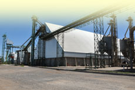
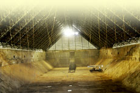
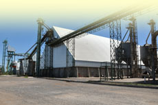
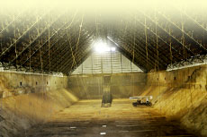

Ruta A 171
Tel/Fax +54 0358 498 0514 / 444
(2686) Alejandro Roca
Provincia de Córdoba, Argentina
info@goldenargentina.com

 



Services for growers
DRYING
Golden Peanut and Tree Nuts has two drying and storage facilities strategically located for good logistics when crops reach their most critical point.
We also provide a fleet of hired vehicles to guarantee availability to transport the products.
BUSINESS OPTIONS
Apart from the traditional operations, Golden Peanut and Tree Nuts offers a wide range of alternatives, such as sharecropping, supply exchanges, field rentals, and other new business options.
We are known for our openness and seriousness in our peanut-related businesses, which, similarly to all the other processes, are carried out according to the guidelines of quality standars and nourishing security.